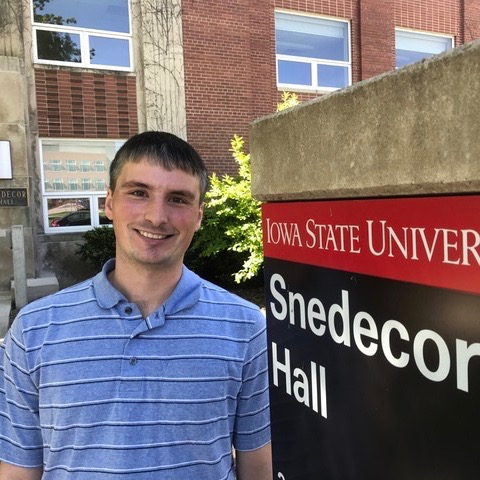

I am a graduate student in the Department of Statistics at Iowa State University. I expect to earn my Ph.D. in Spring 2018. Working with students inspires me and I hope to join the faculty of an institution that highly values teaching and the mentoring of undergraduate researchers.
I have experience teaching a wide range of introductory and intermediate undergraduate courses in statistics and mathematics. My research interests include statistical machine learning, data mining, and statistics education. As a member of an interdisciplinary team, I use predictive analytics to improve student experiences and retention in STEM majors at Iowa State.
Please visit my teaching and research pages or see my CV to learn more. Check out my hobbies page to find out what I do for fun.